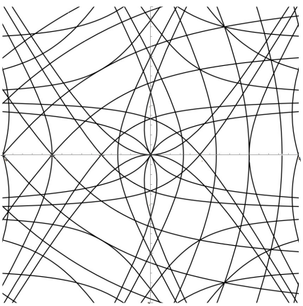

CFT arises in many physical processes such as ???. From the lens of probability theory, correlations of observables decay as power laws. Conformal field theory is an instance of quantum field theory, where observables transform nicely under the conformal group, or angle-preserving transformations which consists of translations, rotations, scaling and inversions through spheres. In dimensions \(d \geq 2\), conformal group Conf(\(d\)) is finite dimenional. Intuitively, each dimension places a constraint on the conformal group, but in dimension \(d=2\), Conf(\(2\)) is infinite dimensional! It is spanned by all holomorphic and anti-holomorphic maps from \(\mathbb{C}\) to \(\mathbb{C}\).
Algebra of observables forms an algebraic structure called vertex operator algebra(VOA).
Mathematically, it is an algebraic structure \((V,(\cdot_{(n)}\cdot)_{n\in\mathbb{Z}},\partial\cdot,\textbf{1})\),
of signature \((2^{\infty},1,0)\),
enjoying an infinity of the following beautiful axioms for all \(n\geq 0, k \geq 0\)
Left Wick identity
\[ \quad a_{(n)}(b_{(-1)}c)-(a_{(n)}b)_{(-1)}c-b_{(-1)}(a_{(n)}c)
=\sum_{k=1}^n\binom{n}{k}(a_{(k-1)}b)_{(n-k)}c,\]
Right Wick identity
\[(a_{(-1)}b)_{(n)}c=\sum_{k=1}^{\infty}a_{(-k-1)}(b_{(n+k)}c)+b_{(n-k-1)}(a_{(k)}c),\]
Pre-Lie algebra identity
\[a_{(-1)}(b_{(-1)}c)-b_{(-1)}(a_{(-1)}c)=(a_{(-1)}b-b_{(-1)}a)_{(-1)}c=\sum_{k\geq 0}(-1)^k (b_{(k)}a)_{(-2-k)}c,\]
Associativity
\[a_{(-1)}(b_{(-1)}c)-(a_{(-1)}b)_{(-1)}c=\sum_{k\geq 0}(-1)^k a_{(-k-2)}(b_{(k)}c)+b_{(-k-2)}(a_{(k)}c),\]
(Skew)Commutativity
\[a_{(-1)}b-b_{(-1)}a=\sum_{k\geq 0}(-1)^k \partial^k b_{(k)}a.\]
In mathematics, VOAs play an important role. Monster, a finite simple group of order \(2^{46} \cdot 3^{20} \cdot 5^9 \cdot 7^6 \cdot 11^2 \cdot 13^3 \cdot 17 \cdot 19 \cdot 23 \cdot 29 \cdot 31 \cdot 41 \cdot 47 \cdot 59 \cdot 71\simeq 8\cdot 10^{58}\), is most easily constructed as group of automorphisms of a certain VOA build from 3 copies of a Leech lattice \(E^8\).
More specifically, my research focuses on the study of universal VOAs of a prescribed generating type. These algebras, such as \(\mathcal{W}(c,\lambda),\mathcal{W}_{ev}(c,\lambda),\mathcal{W}^{\mathfrak{sp}_2}(c,k)\) Quotients of these algebras correspond to many interesting \(1\)-parameter algebras called \(\mathcal{W}\)-(super)algebras. These quotients are in 1-1 correspondence with an exceptional family of curves. Here are some examples drawn(toDo). It is clear that these curves have a symmetry to them.  At the level of algebras these symmetries correspond to isomorphism of 1-parameter algebras, known as triality.